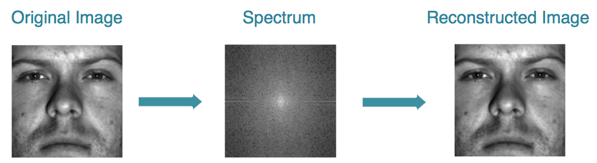
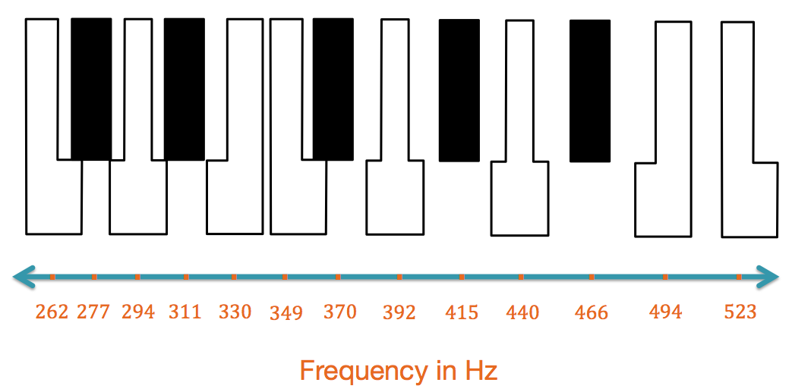

One thousand songs spanning 10 genres were taken from the GTZAN database4 and transformed into images we call portraits. By representing songs as images, we are able to use existing methods of image classification3 to identify the songs by genre. For each pair of genres we randomly choose 50 portraits from each genre for training and use the remaining 50 for testing. This process was repeated 50 times and we show the average portrait for each genre here. An L1 minimization routine1 allows us to find the best pixels in the portraits to discern between genres while reducing the amount of data required for classification. We run the same test scheme as above using only 0.20% of the original data.
It has been shown that exact recovery of signals from incomplete frequency information can be done by solving convex optimization problems2. If we can represent data in a basis where the information of concern is sparse (e.g. Fourier space for natural images), then we need only monitor a minimal amount of information to perform analysis.
Stuff
[1] Brunton, B. W., Brunton, S. L., Proctor, J. L., & Kutz, J. N. (2013). "Optimal sensor placement and enhanced sparsity for classification," arXiv preprint arXiv:1310.4217.
[2] E. Candés, J. Romberg, T. Tao, “Robust Uncertainty Principles: Exact Signal Reconstruction from Highly Incomplete Frequency Information,” IEEE Trans. on Information Theory, vol. 52, no. 2, pp. 489-509, 2006.
[3] R. Duda, P. Hart, D. Stork, Pattern Classification, 2d ed. New York: John Wiley & Sons, 2001.
[4] G. Tzanetakis and P.Cook, “Musical Genre Classification of Audio Signals,” IEEE Trans. Speech Aud. Process., vol. 10, no. 5, pp. 293-302, 2002.
[5] A. Georghiades, et al., “From Few to Many: Illumination Cone Models for Face Recognition under Variable Lighting and Pose,” IEEE Trans. Pattern Anal. Mach. Intelligence, vol. 23, no. 6, pp. 643-660, 2001.
{kind=link}
{kind=link}
{kind=link}
{kind=link}
{kind=link}
{kind=link}
{kind=link}
{kind=link}